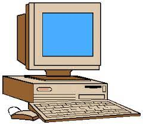

La computadora es una máquina electrónica capaz de almacenar información y tratarla automáticamente mediante operaciones matemáticas y lógicas controladas por programas informáticos.
Ver las partes ↓

Memoria RAM
Se trata de la memoria que, en un equipo informático, es utilizada por un procesador para recibir instrucciones y guardar los resultados. Puede decirse que la RAM es el área de trabajo del software de una computadora.
Disco Duro
Un disco duro es una unidad de hardware que se usa para almacenar contenido y datos digitales en las computadoras. Todas las computadoras tienen un disco duro interno, pero también hay discos duros externos que pueden usarse para ampliar el almacenamiento de una computadora.
Mouse
El ratón o mouse (en inglés pronunciado /maʊs/) es un dispositivo apuntador utilizado para facilitar el manejo de un entorno gráfico en una computadora. Generalmente está fabricado en plástico, y se utiliza con una de las manos.